9.5 Setting up a project in RStudio
Now that you’re all set up, let’s create your first version controlled RStudio project. There are a couple of different approaches you can use to do this. You can either setup a remote GitHub repository first then connect an RStudio project to this repository (we’ll call this Option 1). Another option is to setup a local repository first and then link a remote GitHub repository to this repository (Option 2). You can also connect an existing project to a GitHub repository but we won’t cover this here. We suggest that if you’re completely new to Git and GitHub then use Option 1 as this approach sets up your local Git repository nicely and you can push and pull immediately. Option 2 requires a little more work and therefore there are more opportunities to go wrong. We will cover both of these options below.
9.5.1 Option 1 - GitHub first
To use the GitHub first approach you will first need to create a repository (repo) on GitHub. Go to your GitHub page and sign in if necessary. Click on the ‘Repositories’ tab at the top and then on the green ‘New’ button on the right

Give your new repo a name (let’s call it first_repo for this Chapter), select ‘Public’, tick on the ‘Initialize this repository with a README’ (this is important) and then click on ‘Create repository’ (ignore the other options for now).
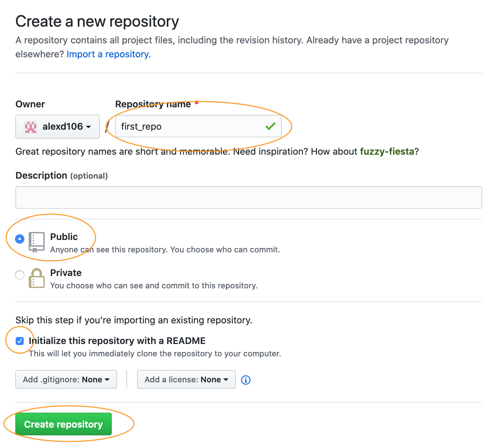
Your new GitHub repository will now be created. Notice the README has been rendered in GitHub and is in markdown (.md) format (see Chapter 8 on R markdown if this doesn’t mean anything to you). Next click on the green ‘Clone or Download’ button and copy the https//... URL that pops up for later (either highlight it all and copy or click on the copy to clipboard icon to the right).
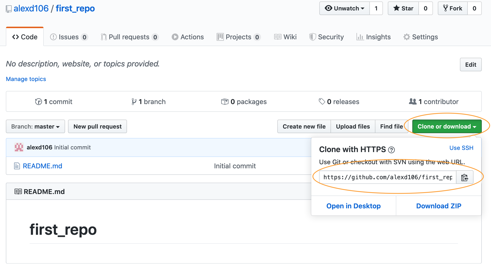
Ok, we now switch our attention to RStudio. In RStudio click on the File -> New Project menu. In the pop up window select Version Control.
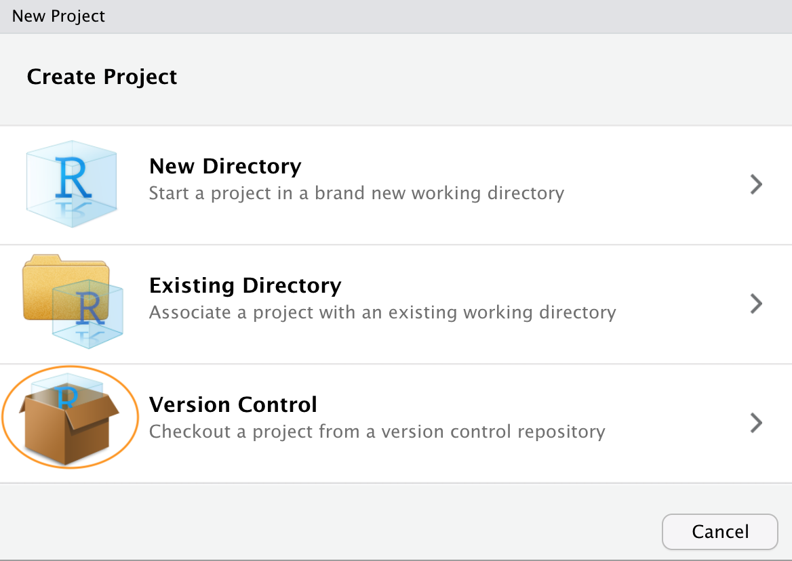
Now paste the the URL you previously copied from GitHub into the Repository URL: box. This should then automatically fill out the Project Directory Name: section with the correct repository name (it’s important that the name of this directory has the same name as the repository you created in GitHub). You can then select where you want to create this directory by clicking on the Browse button opposite the Create project as a subdirectory of: option. Navigate to where you want the directory created and click OK. We also tick the Open in new session option.
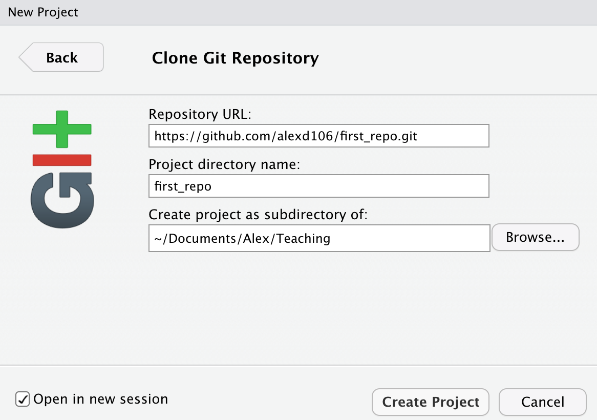
RStudio will now create a new directory with the same name as your repository on your local computer and will then clone your remote repository to this directory. The directory will contain three new files; first_repo.Rproj (or whatever you called your repository), README.md and .gitignore. You can check this out in the Files tab usually in the bottom right pane in RStudio. You will also have a Git tab in the top right pane with two files listed (we will come to this later on in the Chapter). That’s it for Option 1, you now have a remote GitHub repository set up and this is linked to your local repository managed by RStudio. Any changes you make to files in this directory will be version controlled by Git.

9.5.2 Option 2 - RStudio first
An alternative approach is to create a local RStudio project first and then link to a remote Github repository. As we mentioned before, this option is more involved than Option 1 so feel free to skip this now and come back later to it if you’re interested. This option is also useful if you just want to create a local RStudio project linked to a local Git repository (i.e. no GitHub involved). If you want to do this then just follow the instructions below omitting the GitHub bit.
In RStudio click on the File -> New Project menu and select the New Directory option.

In the pop up window select the New Project option

In the New Project window specify a Directory name (choose second_repo for this Chapter) and select where you would like to create this directory on you computer (click the Browse button). Make sure the Create a git repository option is ticked
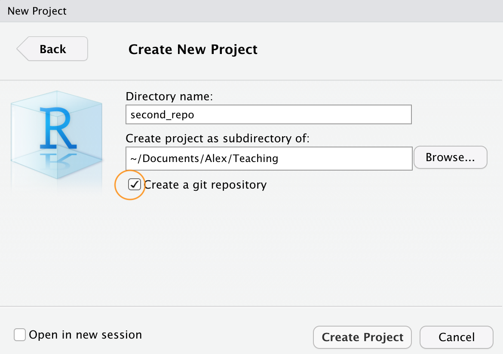
This will create a version controlled directory called second_repo on your computer that contains two files, second_repo.Rproj and .gitignore (there might also be a .Rhistory file but ignore this). You can check this by looking in the Files tab in RStudio (usually in the bottom right pane).
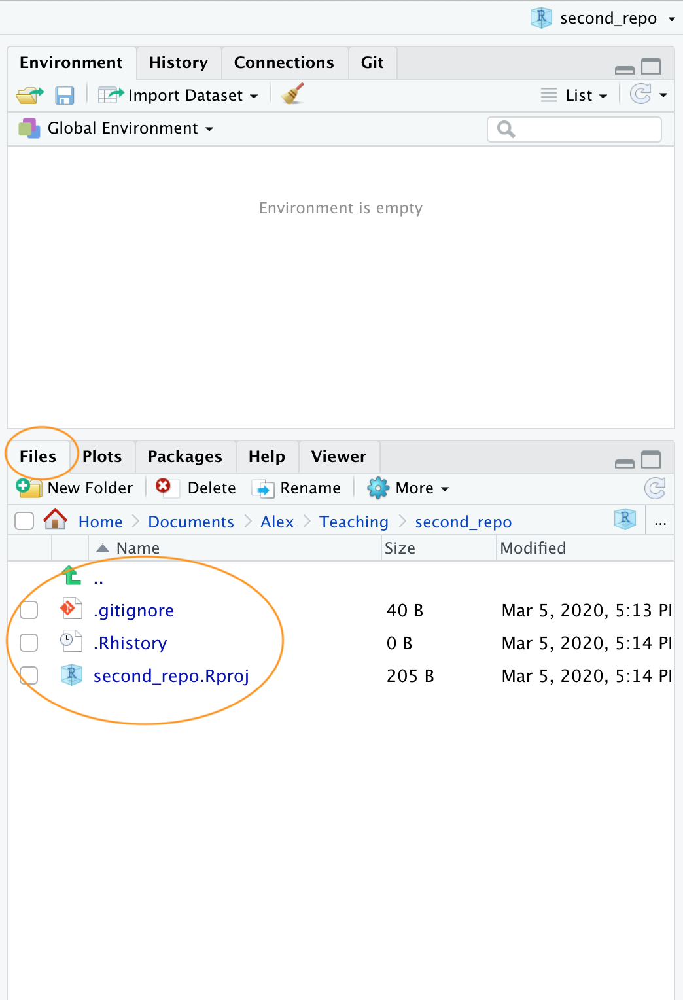
OK, before we go on to create a repository on GitHub we need to do one more thing - we need to place our second_repo.Rproj and .gitignorefiles under version control. Unfortunately we haven’t covered this in detail yet so just follow the next few instructions (blindly!) and we’ll revisit them in the Using Git section of this Chapter.
To get our two files under version control click on the ‘Git’ tab which is usually in the top tight pane in RStudio
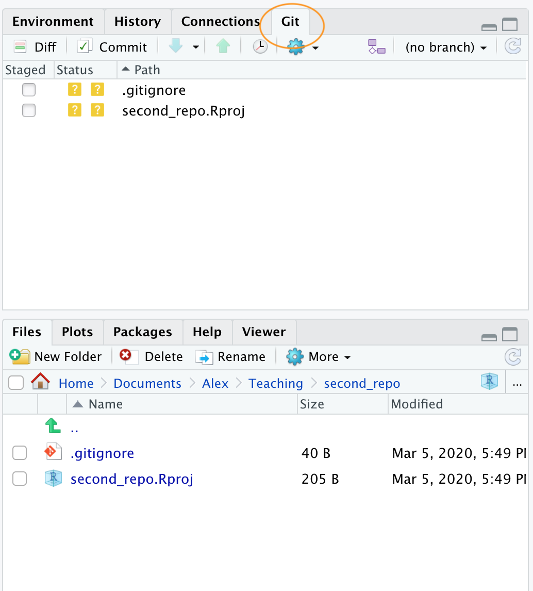
You can see that both files are listed. Next, tick the boxes under the ‘Staged’ column for both files and then click on the ‘Commit’ button.
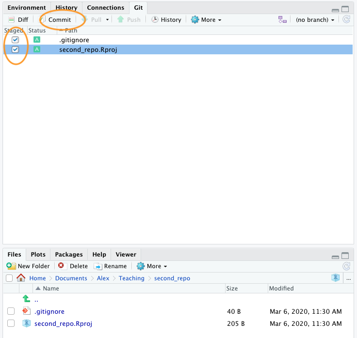
This will take you to the ‘Review Changes’ window. Type in the commit message ‘First commit’ in the ‘Commit message’ window and click on the ‘Commit’ button. A new window will appear with some messages which you can ignore for now. Click ‘Close’ to close this window and also close the ‘Review Changes’ window. The two files should now have disappeared from the Git pane in RStudio indicating a successful commit.
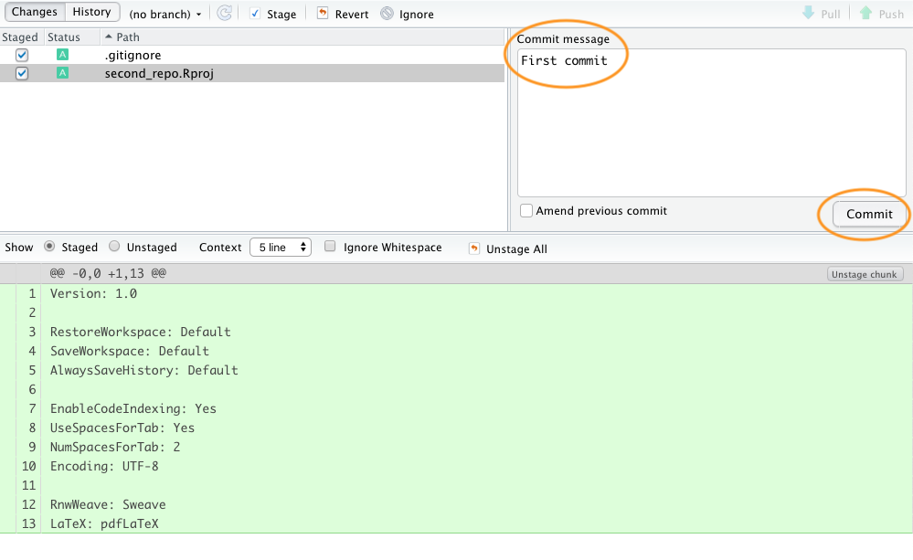
OK, that’s those two files now under version control. Now we need to create a new repository on GitHub. In your browser go to your GitHub page and sign in if necessary. Click on the ‘Repositories’ tab and then click on the green ‘New’ button on the right. Give your new repo the name second_repo (the same as your version controlled directory name) and select ‘Public’. This time do not tick the ‘Initialize this repository with a README’ (this is important) and then click on ‘Create repository’.
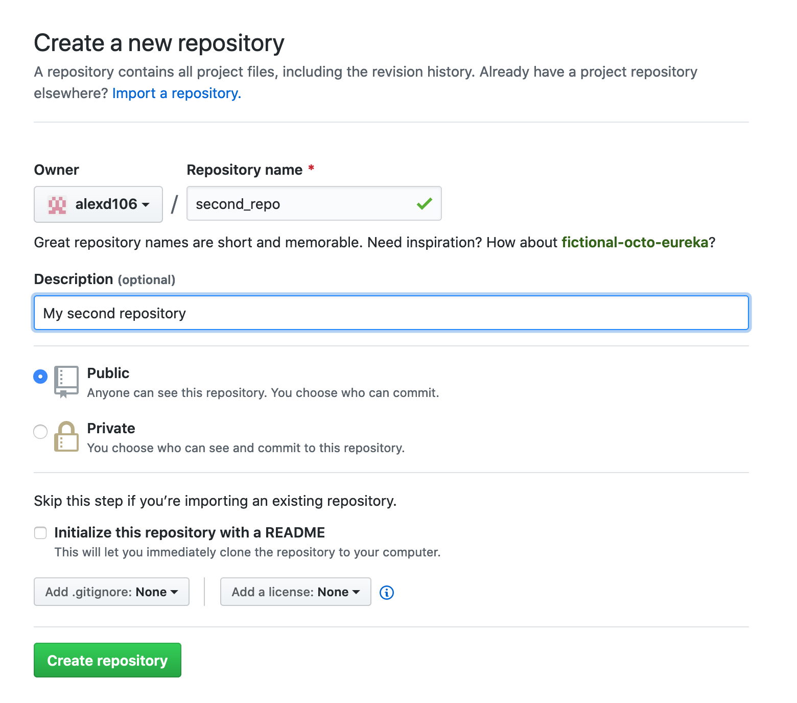
This will take you to a Quick setup page which provides you with some code for various situations. The code we are interested in is the code under ...or push an existing repository from the command line heading.
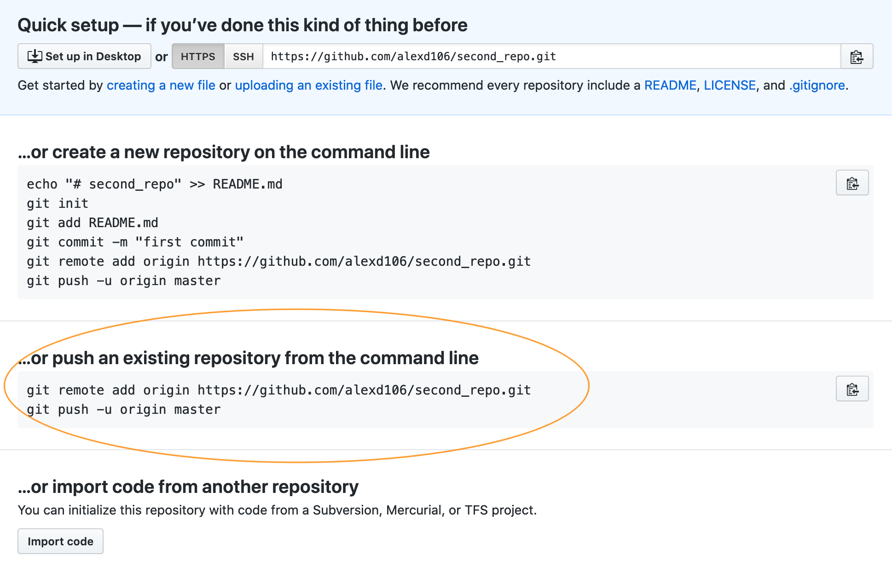
Highlight and copy the first line of code (note: yours will be slightly different as it will include your GitHub username not mine)
git remote add origin https://github.com/alexd106/second_repo.git
Switch to RStudio, click on the ‘Terminal’ tab and paste the command into the Terminal. Now go back to GitHub and copy the second line of code
git push -u origin master
and paste this into the Terminal in RStudio. You should see something like this
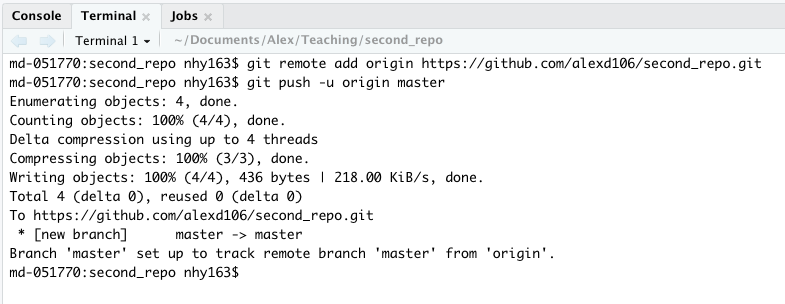
If you take a look at your repo back on GitHub (click on the /second_repo link at the top) you will see the second_repo.Rproj and .gitignore files have now been pushed to GitHub from your local repository.
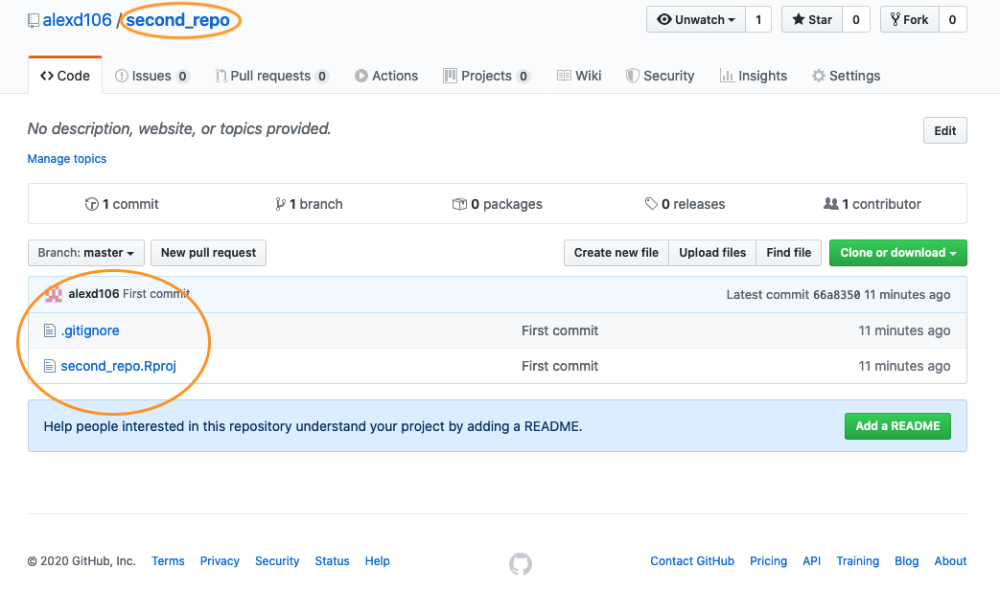
The last thing we need to do is create and add a README file to your repository. A README file describes your project and is written using the same Markdown language you learned in the R markdown Chapter. A good README file makes it easy for others (or the future you!) to use your code and reproduce your project. You can create a README file in RStudio or in GitHub. Let’s use the second option.
In your repository on GitHub click on the green Add a README button.
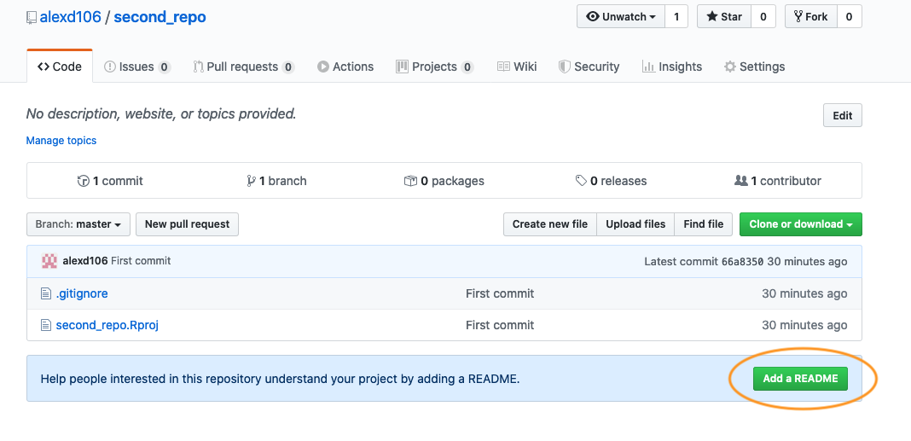
Now write a short description of your project in the <> Edit new file section and then click on the green Commit new file button.
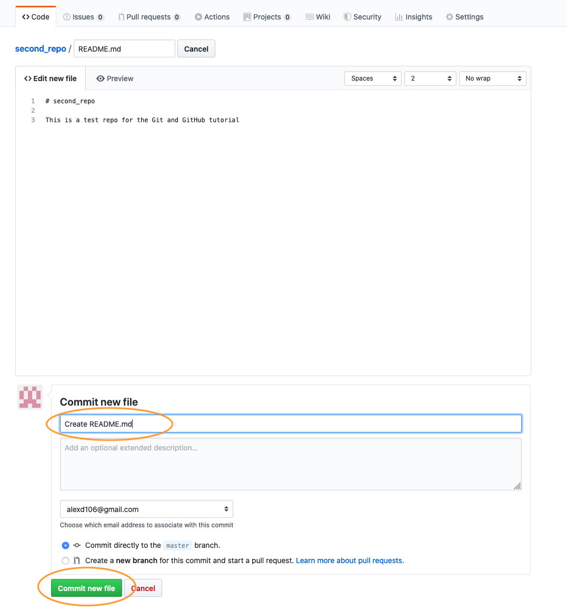
You should now see the README.md file listed in your repository. It won’t actually exist on your computer yet as you will need to pull these changes back to your local repository, but more about that in the next section.
Whether you followed Option 1 or Option 2 (or both) you have now successfully setup a version controlled RStudio project (and associated directory) and linked this to a GitHub repository. Git will now monitor this directory for any changes you make to files and also if you add or delete files. If the steps above seem like a bit of an ordeal, just remember, you only need to do this once for each project and it gets much easier over time.